<meta data-freshmark-page data-title="基础有机化学 L9-3 — Freshmark" data-description="本文是【基础有机化学 L9-3 补充你的知识盲区，你真的理解醇的取代和消除反应吗？】的学习笔记" data-canonical="https://example.com/posts/chemistry/babychem/alcohol-to-halide-conversion-and-alcohol-elimination/" data-article="true"><main><header class="container article-header"><a class="back-link" href="/">← Back to all writing</a><h1>基础有机化学 L9-3</h1><p class="article-dek">本文是【基础有机化学 L9-3 补充你的知识盲区，你真的理解醇的取代和消除反应吗？】的学习笔记</p><div class="article-meta"><time datetime="2026-07-09">July 9, 2026</time><span>1 min read</span><span>有机化学 · 化学竞赛</span><a href="index.md" download>Download Markdown</a></div></header><div class="article-wrap"><aside class="toc"><p>On this page</p><a href="#parti">PartI:醇的取代</a><a href="#roh-hx">ROH + HX</a><a href="#">邻基参与效应</a><a href="#roh-pbr3">ROH + PBr3</a><a href="#roh-socl2">ROH + SOCl2</a><a href="#roh-tscl">ROH + TsCl</a><a href="#partii">PartII:醇的消除</a><a href="#">扩环重排</a><a href="#practice">Practice</a></aside><article class="prose"><p>本文是<a href="https://www.bilibili.com/video/BV1Pq4y1u7kE/?share_source=copy_web&amp;vd_source=8df86ec0f66b0d7c70b7414a1a60bc6a">【基础有机化学 L9-3 补充你的知识盲区，你真的理解醇的取代和消除反应吗？】</a>的学习笔记</p>
<!--more-->
<h1 id="parti">PartI:醇的取代</h1>
<h2 id="roh-hx">ROH + HX</h2>
<p>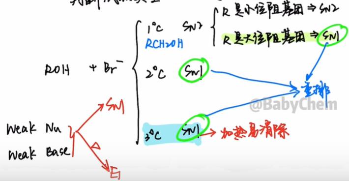 结论:</p>
<p>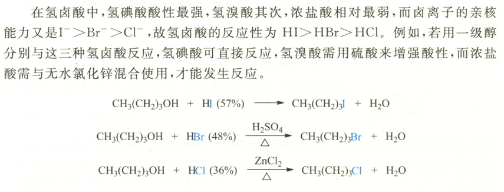</p>
<ol><li>机理:羟基变氧鎓离子(水是好的离去基团)</li><li>小位阻一级醇,否则\(S_{N1}\)会重排</li><li>醇反应性:烯丙型,苯甲型,3°&gt;2°&gt;1°</li><li>氢卤酸反应性:\(\ce{HI\gt HBr\gt HCl}\)</li></ol>
<h3 id="">邻基参与效应</h3>
<p>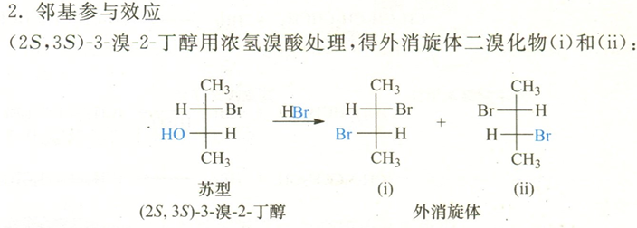</p>
<p>为了解释外消旋体产物和更快的反应速率,联系Br原子的三对孤对电子,人们提出了邻基参与效应.</p>
<p>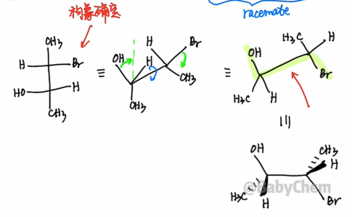</p>
<p>邻基参与对立体化学的要求:反式共平面</p>
<p>溴原子的孤对电子,填入碳氧键的反键轨道,引发水的离去,形成<strong>溴鎓离子</strong>.</p>
<p>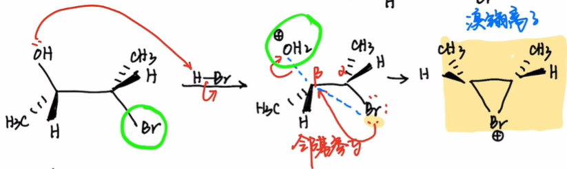</p>
<p>接下来,溴鎓离子受到\(\ce{Br-}\)的进攻开环,且左右的进攻等可能,故生成两种手性比50:50的<strong>外消旋体(racemate)</strong>.</p>
<p>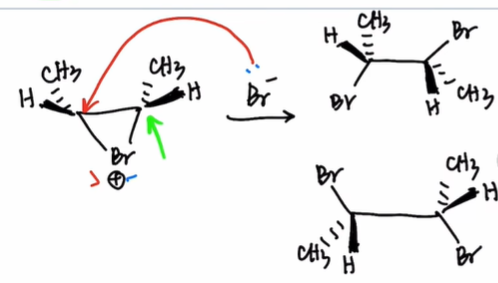</p>
<h2 id="roh-pbr3">ROH + PBr3</h2>
<p>\[\begin{gathered} \ce{3ROH + PX3 -&gt; 3RX + H3PO3}\\ \ce{ROH + PX5 -&gt; RX + POX3 + HX} \end{gathered}\] P是第三周期元素,故\(\ce{PBr3}\)中P原子有3d轨道,可以被羟基的氧孤对电子进攻,让羟基变成好的离去基团,并且产生亲核试剂\(\ce{Br-}\).</p>
<p>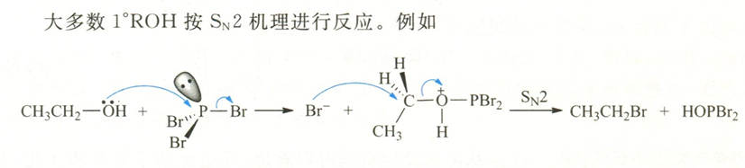 结论:</p>
<p>溴化:\(\ce{PBr3}\)(五溴化磷不稳定) 碘化:\(\ce{P + I2}\)</p>
<ol><li>氯化:\(\ce{PCl3}/\ce{PCl5}\)</li><li>主要用于1°,2°</li><li>低温避免重排</li></ol>
<h2 id="roh-socl2">ROH + SOCl2</h2>
<p>\[\ce{ROH + SOCl2 -&gt;[\triangle] SO2 ^ + HCl ^ + RCl}\]</p>
<p>反应优点:直接得到氯代烷,条件温和,速率快,产率高,产物易于提纯.</p>
<p>反应前后醇的构型保持,并且低温下可以分离出氯代亚硫酸酯,经加热分解为氯代烷和\(\ce{SO2}\),这表明反应机理是:</p>
<p>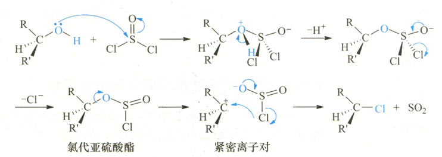</p>
<p>反应过程中先生成氯代亚硫酸酯,然后分解为紧密离子对,\(\ce{Cl-}\)作为离去基团(LG)中的一部分向碳正离子进攻,即&quot;内返&quot;,得到构型保持的产物氯代烷. 由于取代犹如在分子内进行,所以叫它分子内亲核取代(intramolecular  nucleophilic substitution),以\(S_Ni\)表示.</p>
<p>如果在醇和亚硫酰氯的混合液中加入弱亲核试剂吡啶,则得到构型翻转的产物.</p>
<p>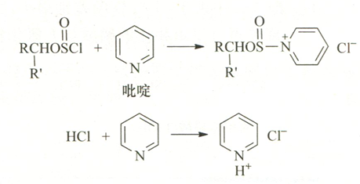</p>
<p>生成的\(\ce{Cl-}\)作亲核试剂从碳氧键的背面,进攻氯代亚硫酸酯,得到构型翻转的产物(\(S_N2\))</p>
<p>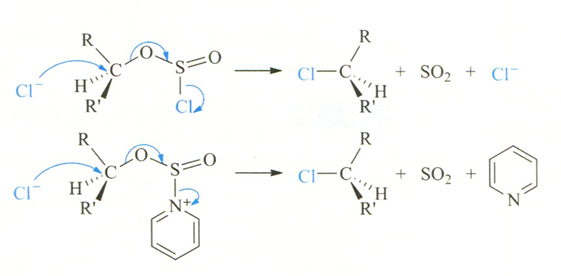</p>
<blockquote><p>三级胺（\(R_3N\)）和 HCl 反应也有利于氯离子的形成，因此三级胺和吡啶一样，可对此反应起催化作用：</p></blockquote>
<blockquote><p>\[R_3N + HCl \rightarrow R_3NH^+ + Cl^-\]</p></blockquote>
<h2 id="roh-tscl">ROH + TsCl</h2>
<p>Ts=Tosyl=对甲苯磺酸基</p>
<p>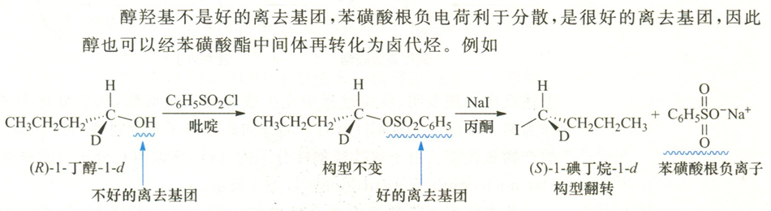</p>
<p>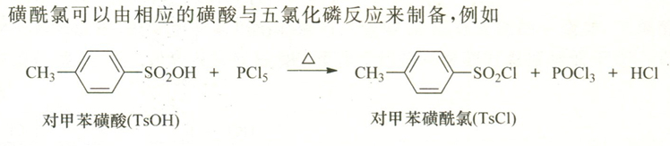</p>
<p>自此,将醇转化为卤代烃的4种方法完结.</p>
<h1 id="partii">PartII:醇的消除</h1>
<ol><li>羟基的质子化</li><li>形成碳正离子</li><li>*可能重排</li><li>消除成烯烃\(\begin{cases} \text{立体选择性}\begin{cases}Z,\\E\end{cases}\\ \text{区域选择性}\begin{cases}Zaitsev,\\Hoffmann\end{cases} \end{cases}\)</li></ol>
<p>在工业上,常用醇在350~400℃在氧化铝或硅酸盐表面脱水,此反应<strong>不发生重排</strong>.</p>
<p>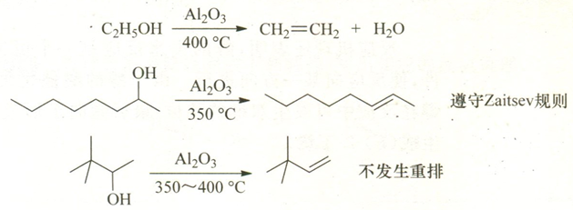</p>
<h2 id="">扩环重排</h2>
<p>一般来说,对于碳正离子,六元环比五元环环张力更小,更稳定.</p>
<p>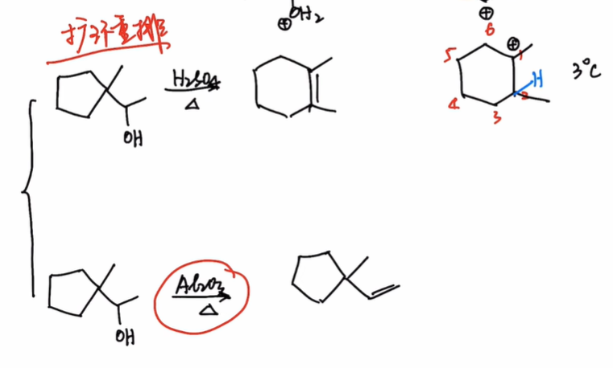</p>
<h2 id="practice">Practice</h2>
<p>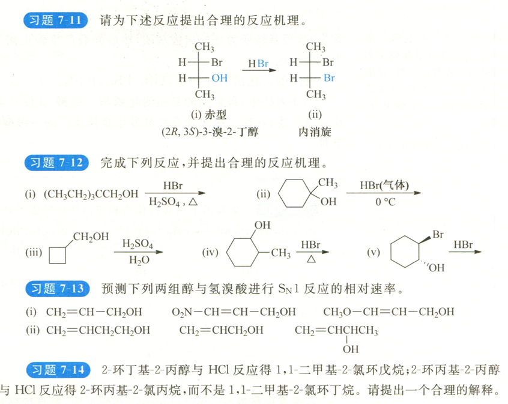</p></article></div></main>